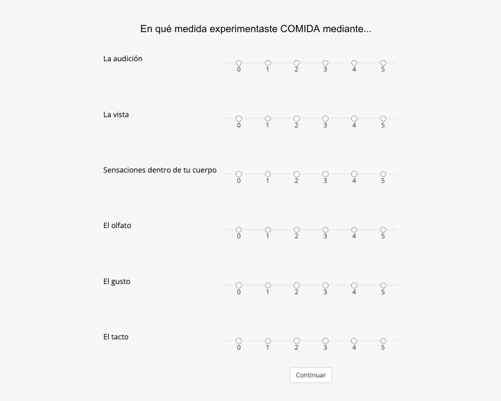
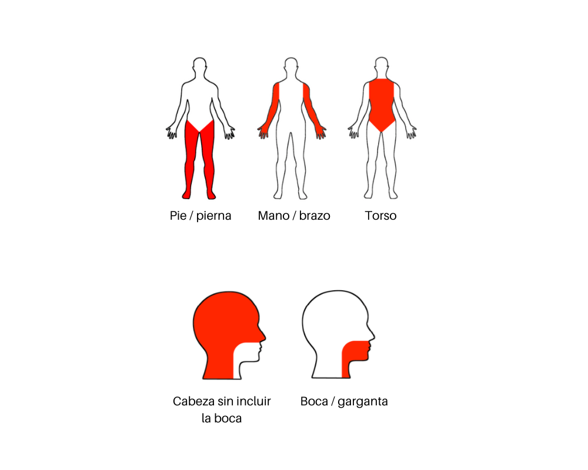
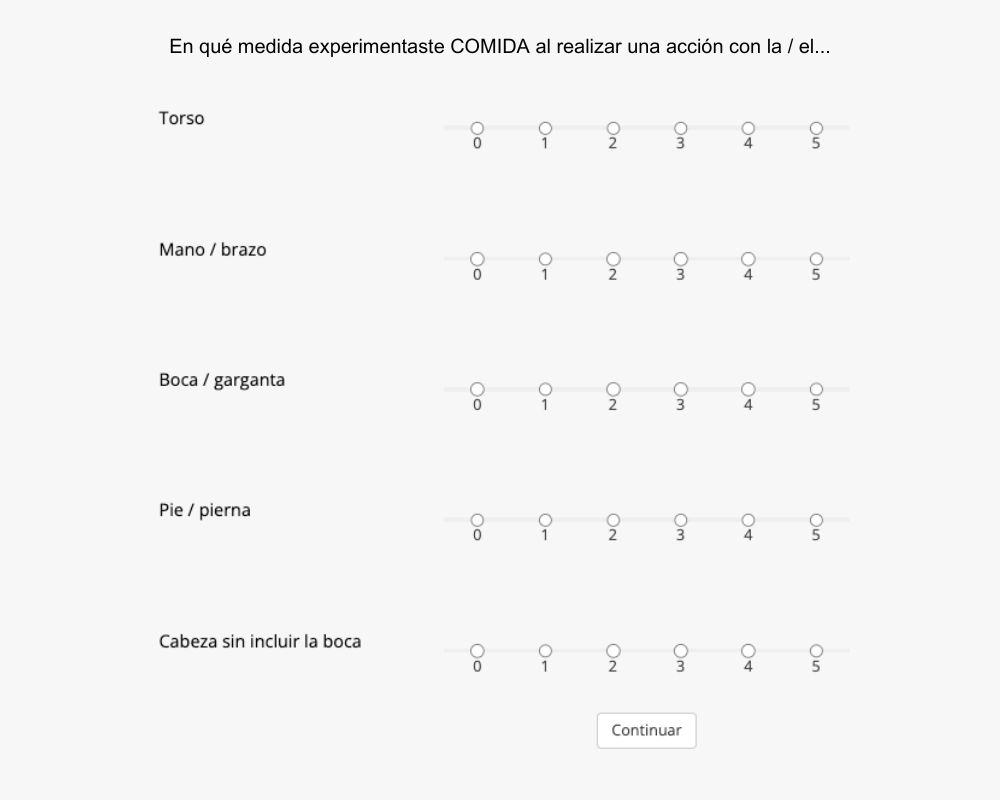

<!<!DOCTYPE html>
<html>
  <head>
    <link rel="stylesheet" href="style.css">
    <title>Tarea sensorimotor</title>
    <script src="https://unpkg.com/jspsych@7.3.3"></script>
    <script src="https://unpkg.com/@jspsych/plugin-html-keyboard-response@1.1.2"></script>
    <script src="https://unpkg.com/@jspsych/plugin-preload@1.1.2"></script>
    <script src="https://unpkg.com/@jspsych/plugin-fullscreen@1.2.0"></script>
    <script src="https://unpkg.com/@jspsych/plugin-survey-text@1.1.2"></script>
    <script src="https://unpkg.com/@jspsych/plugin-survey-multi-choice@1.1.2"></script>
    <script src="https://unpkg.com/@jspsych/plugin-instructions@1.1.3"></script>
    <script src="https://unpkg.com/@jspsych/plugin-html-button-response@1.1.2"></script>
    <script src="https://unpkg.com/@jspsych/plugin-survey-likert@1.1.2"></script>
    <script src="https://unpkg.com/@jspsych/plugin-call-function@1.1.2"></script>
    <script src="https://unpkg.com/@jspsych/plugin-animation@1.1.2"></script>
    <script src="https://unpkg.com/@jspsych/plugin-image-button-response@1.1.2"></script>
    <script src="https://unpkg.com/@jspsych/plugin-image-keyboard-response@1.1.2"></script>
    <link href="https://unpkg.com/jspsych@7.3.3/css/jspsych.css" rel="stylesheet" type="text/css" />
    <script src="https://unpkg.com/@jspsych-contrib/plugin-pipe"></script>
    <script type="text/javascript" src="stimuli_1.js"></script>
    <script language="javascript"></script>  
  </head>
  <body></body>
  <script>  

// Plugins used //
    
// jsPsych.randomization.sampleWithReplacement
// preload 
// image-button-response 
// fullscreen 
// survey-multi-choice 
// survey-text 
// instructions 
// html-button-response 
// html-keyboard-response 
// survey-likert
// pipe


///////////////////////////////////////////////////////////////////////////////////
///////// Generate an ID for each participant and randomize conditions ////////////////
//////////////////////////////////////////////////////////////////////////////////

// Start JsPsych and show progress bar 
var jsPsych = initJsPsych({
    show_progress_bar: true,
    message_progress_bar: 'Porcentaje completado de toda la tarea'
});

            
/* Generate an ID for each participant, a random number of 8 alphanumeric characters */

var rand_subject_id = jsPsych.randomization.randomID(8);

/* Add participant's ID to the data of each trial */

jsPsych.data.addProperties({ID: rand_subject_id});

var CONDITION = 3;
//var CONDITION = 4;

/* Add selected condition to data */

jsPsych.data.addProperties({Condition: CONDITION});


//////////////////////////////////////////////
///////// CARGAR IMÁGENES ///////////////////
//////////////////////////////////////////////

// Se crea la variable "imagenes" para cargarlas antes del experimento
var imagenes = ["Consentimiento_exp_sensorimotor.png", "instrucciones_oraciones_sentidos.png", "instrucciones_oraciones_efectores.png", "instrucciones_palabras_sentidos.png","instrucciones_palabras_efectores.png","instrucciones_ejemplos_efectores.png"]

// Se cargan los elementos de "imagenes" antes de iniciar el experimento
var preload = {
    type: jsPsychPreload,
    images: imagenes
};

var consentimiento_informado = {
    type: jsPsychHtmlButtonResponse,
    stimulus: `
        <div style="display: flex; justify-content: space-between;">
            
            
            
        </div>
        <div style="text-align: center;">
            <p style="font-weight: bold; font-size: 20px;">UNIVERSIDAD NACIONAL AUTÓNOMA DE MÉXICO</p>
            <p>Laboratorio de Cognición Corporizada</p>
            <p><strong>Consentimiento informado</strong></p>
            </div>
            <div style="text-align: left;">
            <p>Por favor, lee cuidadosamente la siguiente información sobre el presente estudio y el consentimiento informado. Si
            después de leer la información deseas participar en esta investigación puedes darle clic al botón en la parte inferior de
            este documento que dice <strong>ACEPTO</strong></p>
            <p>El presente estudio está a cargo del Laboratorio de Cognición Corporizada de la Facultad de Psicología de la Universidad
            Nacional Autónoma de México (UNAM), en donde la responsable del laboratorio y de la investigación es la Dra. Alejandra
            Ciria Fernández Varela. El <strong>estudio</strong> trata sobre la representación del conocimiento de conceptos. El <strong>objetivo</strong> de la
            investigación es conocer lo que las personas piensan sobre el conocimiento adquirido de los conceptos. La <strong>tarea</strong> implica
            reflexionar y evaluar en una escala distintos aspectos de tu experiencia con distintos conceptos. No hay respuestas
            correctas o incorrectas, lo importante es conocer tu experiencia.</p>
            <p><strong>Es importante mencionarte que:</strong></p>
            <ul>
                <li>La investigación no causa ningún daño a tu salud física o psicológica.</li>
                <li>Es importante que tengas conocimiento que puedes retirarte del estudio en cualquier momento si así lo deseas.</li>
                <li>Tu participación es de carácter académico y no se otorga ningún tipo de beneficio económico.</li>
                <li>Para participar, no necesitas dar tu nombre o algún otro dato que revele tu identidad.</li>
                <li>Los datos recolectados en este estudio serán utilizados para fines académicos o de investigación y podrán ser compartidos con instituciones y personas ajenas a la UNAM.</li>
            </ul>
            <p><strong>¿Qué ocurre con los datos recolectados?</strong></p>
            <p>Al comenzar el experimento, se te asignará automáticamente un código para que tus datos sean completamente
            anónimos. Este código se asociará a las respuestas del experimento junto con tus datos demográficos como edad y
            género. Una vez finalizada la investigación se publicarán los resultados. Recuerda que tus datos se almacenan de forma
            anónima, por lo que así permanecerán en la base de datos que se archiven.</p>
            <p><strong>Duración aproximada de la tarea:</strong> 15-20 minutos</p>
            <p>"Confirmo que he leído la información aquí presentada y acepto participar en el estudio de forma voluntaria. Tengo
            conocimiento sobre los objetivos del estudio y los datos de quienes lo llevan a cabo. Autorizo que los datos recabados
            de mi participación sean utilizados con fines académicos o de investigación y compartidos con instituciones y personas
            ajenas a la UNAM. Tengo conocimiento que mis datos son anónimos y que en ningún momento se me pide información
            sobre mi identidad. Se me ha hecho saber que la investigación no daña mi salud, que no recibiré un beneficio económico
            por mi participación y que estoy en mi derecho de retirarme en cualquier momento si así lo deseo." </p>
            <p>Si estás de acuerdo con el párrafo anterior y has decidido participar, por favor, presiona el botón que dice <strong>ACEPTO.</strong></p>
            <p>Si no estás de acuerdo, por favor, cierra el navegador para cancelar el experimento. </p>
            
            <p>Si tienes alguna duda puedes escribir a: alejandra.ciria@unam.mx </p>
            </div>
    `,
    choices: ['ACEPTO']
};

////////////////////////////////////////////////
///////// Pantalla completa ///////////////////
//////////////////////////////////////////////

var pantalla_completa = {
    type: jsPsychFullscreen,
    message: '<p>Presiona el botón para activar el modo de pantalla completa.</p>',
    fullscreen_mode: true,
    button_label: 'Continuar',
    delay_after: 1000
};


////////////////////////////////////////////////
///////// Datos participante ///////////////////
//////////////////////////////////////////////

//Género
var genero = {
    type: jsPsychSurveyMultiChoice,
    button_label: 'Continuar',
     preamble: '<p><strong>¡Bienvenid@!</p>' + '<p><strong>Por favor, proporciónanos la siguiente información sobre ti. </strong></></p> <p>--------------------------------------------------------------------------------------------</p>',
    questions: [
        {prompt: "<p><strong>1. Género: </strong>", name: 'Género', options: ["Femenino", "Masculino", "Otro"], required:true}
    ]
};


// Edad
var edad = {
  type: jsPsychSurveyText,
  button_label: 'Continuar',
  questions: [
    {prompt: '<p><strong>2. ¿Cuántos años tienes? (número)</strong></p>', name: 'Edad', required: true}
  ],
};

// Nacionalidad
var nacionalidad = {
    type: jsPsychSurveyText,
    button_label: 'Continuar',
    questions: [
    {prompt: '<p><strong>3. ¿Cuál es tu nacionalidad?</strong></p>', name: 'Nacionalidad', required: true}
    ],
};

//Lengua materna
var lengua_m = {
     type: jsPsychSurveyMultiChoice,
    button_label: 'Continuar',
    questions: [
        {prompt: '<p><strong>4. ¿El español es tu lengua materna?</p>', name: 'Lengua_m',horizontal: true ,required: true, options: ["Sí", "No"]},
    ],
};

//Área del conocimiento
var area = {
     type: jsPsychSurveyMultiChoice,
    button_label: 'Continuar',
    questions: [
        {prompt: '<p><strong>5. ¿A qué área del conocimiento perteneces/te dedicas?</p>', name: 'area',required: true, options: ["Ciencias físico-matemáticas y de las ingenierías",
"Ciencias biológicas, químicas y de la salud", "Ciencias sociales","Humanidades y de las artes."]},
    ],
};


////////////////////////////////////////////////
///////// INICIO EXPERIMENTO ///////////////////
//////////////////////////////////////////////

// Lista de oraciones (sentences) con su respectiva palabra (word) en distintos tipos de contextos A y B

// Define the number of random conditions (4 lists of stimuli)
var num_lista = [1,2,3,4]; 

var LISTA = jsPsych.randomization.sampleWithReplacement(num_lista, 1);

/* Añadir lista de estímulos seleccionada a los datos */

jsPsych.data.addProperties({num_lista: LISTA});

// Seleccionar lista de estímulos

var stimuli;
stimuli = stimuli_1;
 

// Aleatorizar los estímulos del experimento
stimuli = jsPsych.randomization.shuffle(stimuli);


///////////////////////////////////////////////////////
// Instrucciones_3 palabra, primero sentidos y luego acciones
var instructions = {
    type: jsPsychInstructions,
    button_label_previous: 'Regresar',
    button_label_next: 'Siguiente',
    show_page_number: true,
    page_label: 'p.',
    pages: [
        '<p style= "font-size:30px;font-weight:bold";>INSTRUCCIONES</p>' +
        '<p>En esta tarea, se te presentará una serie de palabras, cada una de forma individual y en mayúsculas. Por ejemplo: </p>' +
        '<p><strong> COMIDA </strong></p>',
        '<p>La primera parte de tu tarea consiste en evaluar en qué medida experimentaste la PALABRA mediante diferentes sentidos: </p>' +
        '<p>La vista, la audición, el olfato, el tacto, el gusto y sensaciones dentro de tu cuerpo.</p>' +
        '<p>Cada sentido tendrá su propia escala que va de 0 (sin experiencia alguna con ese sentido) a 5 (mucha experiencia con ese sentido).</p>' ,
        '<p>Esta es una imagen ejemplo de cómo te aparecerán las escalas para evaluar en qué medida experimentaste la PALABRA (0 sin experiencia alguna - 5 mucha experiencia) con cada sentido:</p>' +
        '</img>' +
        '<p>Para dar tus respuestas, tendrás que dar clic en el número de la escala que mejor evalúe tu experiencia con cada uno de los sentidos.</p>' +
        '<p>Después de dar tus respuestas debes presionar el botón "Continuar".</p>',
        '<p>La segunda parte de tu tarea consiste en evaluar en qué medida experimentaste la PALABRA al realizar acciones que involucran distintas partes del cuerpo. </p>' +
        '</img>' +
        '<p>Cada parte del cuerpo tendrá su propia escala que va de 0 (sin experiencia alguna realizando una acción con esa parte del cuerpo) a 5 (mucha experiencia realizando una acción con esa parte del cuerpo).</p>' ,
        '<p>Esta es una imagen ejemplo de cómo te aparecerán las escalas para evaluar tu experiencia con la PALABRA (0 sin experiencia alguna - 5 mucha experiencia ) realizando acciones con distintas partes del cuerpo.</p>' +
        '<p>Para dar tus respuestas, tendrás que dar clic en el número de la escala que mejor evalúe tu experiencia con cada una de las partes del cuerpo.</p>' +
        '</img>'+
        '<p>Después de dar tus respuestas tendrás que presionar el botón “Continuar” para pasar a la siguiente PALABRA a evaluar.</p>',
        '<p>Por favor, si estás contestando a través de un <strong> celular, colócalo en posición horizontal.</strong></p>' +
        '<p>Finalmente, en esta tarea no hay respuestas correctas o incorrectas.</p>' +
        '<p>Lo más importante es que te bases en tu propio juicio.</p>' +
        '<p>___________________</p>' +
        '<p>Presiona “Regresar” si quieres leer de nuevo alguna sección de las instrucciones.</p>' +
        '<p>Presiona “Siguiente” para comenzar con la tarea.</p>'
    ],
    show_clickable_nav: true
};


// Mensaje inicio experimento
var inicio_experimento = {
    type: jsPsychHtmlButtonResponse,
    stimulus: '<p>Presiona el botón para iniciar la tarea.</p>',
    choices: ["INICIAR"],
    post_trial_gap: 1500
};


///////////////////////////////////////////////////////
/// Especificaciones de los ensayos

// Escalas para la fuerza perceptual
var perceptual_scales = [
    "La vista",
    "La audición",
    "El olfato",
    "El tacto",
    "El gusto",
    "Sensaciones dentro de tu cuerpo"
];


// Escalas para la fuerza motora
var action_scales = [
    "Pie / pierna",
    "Mano / brazo",
    "Cabeza sin incluir la boca",
    "Boca / garganta",
    "Torso"
];

//Mapeo entre las etiquetas de escalas de fuerza motora y sus imagenes
var action_scale_images = {
    "Pie / pierna": "PiePierna.jpeg",
    "Mano / brazo": "ManoBrazo.jpeg",
    "Cabeza sin incluir la boca": "Cabeza.jpeg",
    "Boca / garganta": "BocaGarganta.jpeg",
    "Torso": "Torso.jpeg"
};

// Orden aleatorio de las escalas perceptuales y motoras para cada participante
var perceptual_scales = jsPsych.randomization.shuffle(perceptual_scales);
var action_scales = jsPsych.randomization.shuffle(action_scales);


jsPsych.data.addProperties({escala_perceptual: perceptual_scales});
jsPsych.data.addProperties({escala_action: action_scales});


// Define the trial loop - experimental condition - words - order perceptual - action
var trials = [];
stimuli.forEach(function(stimulus) {
    // Define the word presentation trial
    var word_trial = {
        type: jsPsychHtmlKeyboardResponse,
        stimulus: '<div style="font-size: 150%;">' + stimulus.word.toUpperCase() + '</div>',
        trial_duration: 2500,
        choices: "NO_KEYS",
        post_trial_gap: 500, 
        data: {type: stimulus.type, sim: stimulus.sim, fam: stimulus.fam, imag: stimulus.imag, conc: stimulus.conc}
    };

    // Define the perceptual strength rating trial
    var perceptual_trial = {
        type: jsPsychSurveyLikert,
        preamble: "En qué medida experimentaste <strong>" + stimulus.word.toUpperCase() + "</strong> mediante...<br><br><pre>Nada                            Mucho</pre>",
        questions: perceptual_scales.map(function(scale) {
        //return {prompt: '<div style="display:flex; align-items:center;"><p style="margin-right:10px;">' + scale + '</p></div>', labels: ["0", "1", "2", "3", "4", "5"], required: true};
            return {prompt: '<div style= "width: 900px;"> <div style="float:left;">' + scale + '</div></div>', labels: ["0", "1", "2", "3", "4", "5"], required: true, name: scale};
        }),
        randomize_question_order: false,
        scale_width: 375,
        button_label: "Continuar"
    };

    // Define the action strength rating trial
    var action_trial = {
        type: jsPsychSurveyLikert,
        preamble: "En qué medida experimentaste <strong>" + stimulus.word.toUpperCase() + "</strong> al realizar una acción con la / el...<br><br><pre>Nada                            Mucho</pre>",
        questions: action_scales.map(function(scale) {
            return {prompt: '<div style="width: 900px;">' +
                        '<div style="float:left;"></div>' +
                        '<div style="float:left; margin-left: 10px; display: flex; align-items: center;">' + scale + '</div>' +'</div>', labels: ["0", "1", "2", "3", "4", "5"], required: true, name: scale};
        }),
        randomize_question_order: false,
        scale_width: 375,
        button_label: "Continuar"
    };

    // Add all trials to the trial loop
    trials.push(word_trial, perceptual_trial, action_trial);
});


// FINAL //


// Final y preguntas 
var final = {
  type: jsPsychHtmlButtonResponse,
  stimulus: '<p><strong>¡Gracias por tus respuestas!</strong></p><p>Para finalizar, por favor responde dos preguntas sobre tu experiencia realizando esta tarea.</p>',
  choices: ['CONTINUAR']
};

// Dificultad
var dificultad ={
  type: jsPsychSurveyMultiChoice,
  button_label:"CONTINUAR",
  questions: [
    {
      prompt: '<p><strong>En general, ¿La dificultad de esta tarea te pareció: fácil, media, o difícil?</strong></p>', 
      name: 'dificultad', 
      options: ['FÁCIL', 'MEDIA', 'DIFÍCIL'], 
      required: true,
    }
  ],
};

// Estrategia
var estrategia = {
  type: jsPsychSurveyText,
  button_label: 'Continuar',
  questions: [
    {prompt: '<p><str<p><strong> Finalmente, ¿Cuál fue la estrategia que utilizaste para evaluar cómo experimentaste las PALABRAS?</strong></p>' + '<p>Por ejemplo: pensar en un objeto relacionado con la palabra, imaginar una situación en donde se use la palabra, recordar algún evento relacionado, entre otras.</p>', name: 'Estrategia', required: true}
  ],
};


// Agradecimiento
var agradecimiento = {
    type: jsPsychHtmlButtonResponse,
    stimulus: '<p><strong>¡Muchas gracias por tu participación!</strong></p><p>La tarea ha terminado, sólo falta guardar los datos de tus respuestas.</p><p><strong>Por favor, presiona el botón GUARDAR DATOS y espera hasta que deje de dar vueltas el círculo para que se guarden todos los datos.</strong></p> <p>En cuanto esto ocurra ya puedes cerrar la página. Gracias. :)</p>',
    choices: ["GUARDAR DATOS"]
};

// Salir pantalla completa 
var pantalla_salir = {
    type: jsPsychFullscreen,
    fullscreen_mode: false,
    delay_after: 0
};


//guardar datos

const save_data = {
                type: jsPsychPipe,
                action: "save",
                experiment_id: "w4FHfwYFlcYM",
                filename: filename,
                data_string: ()=>jsPsych.data.get().csv()
              };
    
// Combine all blocks into the timeline

// With the selected condition then the corresponding instructions and trial are selected

var timeline= [preload,pantalla_completa,consentimiento_informado,genero,edad,nacionalidad,lengua_m,area].concat(instructions).concat(inicio_experimento).concat(trials).concat(final).concat(dificultad).concat(estrategia).concat(agradecimiento).concat(save_data).concat(pantalla_salir);
     


// Run the experiment
jsPsych.run(timeline);

  </script>
</html>
